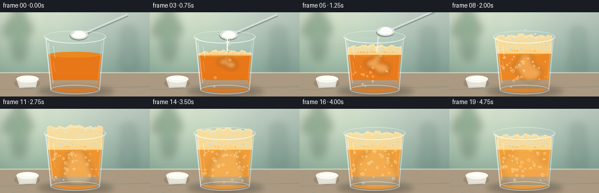
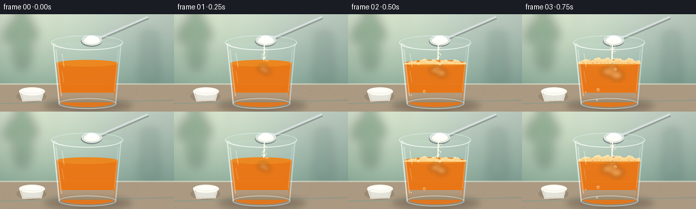

CODING AGENTS AS PIXEL WORLD MODELS
traex/GPT-5.6-Sol · phygen_150
点击播放 · 原生 RGB 像素
逐轮保存的候选
回放视频、检查图与代码变化。
每份候选均可单独播放。实际图片检查记录在下方工具轨迹中。
候选 01播放与检查图
点击播放 · 原生 RGB 像素


展开代码变化
--- 上一保存版本
+++ 本次保存版本
@@ -0,0 +1,278 @@
+from pathlib import Path
+import math
+import numpy as np
+from PIL import Image, ImageDraw, ImageFilter
+import artifact_io
+
+# Procedural, deterministic tabletop timelapse.
+W, H, N, S = 256, 144, 20, 4
+SW, SH = W*S, H*S
+rng = np.random.default_rng(150)
+
+def sc(v): return int(round(v*S))
+def box(b): return tuple(sc(v) for v in b)
+def pts(p): return [(sc(x),sc(y)) for x,y in p]
+
+def ellipse(draw, b, fill, outline=None, width=1):
+ draw.ellipse(box(b), fill=fill, outline=outline, width=sc(width) if outline else 1)
+def line(draw, p, fill, width=1, joint='curve'):
+ draw.line(pts(p), fill=fill, width=sc(width), joint=joint)
+def polygon(draw, p, fill): draw.polygon(pts(p), fill=fill)
+
+def smooth(x):
+ x=max(0.0,min(1.0,x)); return x*x*(3-2*x)
+def mix(a,b,t): return tuple(int(a[i]*(1-t)+b[i]*t) for i in range(len(a)))
+
+def rgba_layer(): return Image.new('RGBA',(SW,SH),(0,0,0,0))
+
+def make_background():
+ # Warm, softly out-of-focus kitchen with a stone worktop.
+ yy, xx = np.mgrid[0:SH,0:SW]
+ y=yy/S; x=xx/S
+ top=np.array([196,210,199.],float); bot=np.array([132,163,151.],float)
+ q=np.clip(y/112,0,1)[...,None]
+ arr=top*(1-q)+bot*q
+ # light from upper left and slight vignette
+ glow=np.exp(-((x-48)**2+(y-25)**2)/(2*72**2))[...,None]
+ arr += glow*np.array([25,23,12.])
+ vig=np.clip(((x-128)/170)**2+((y-70)/130)**2,0,1)[...,None]
+ arr -= vig*18
+ arr=np.clip(arr,0,255).astype(np.uint8)
+ im=Image.fromarray(arr,'RGB').convert('RGBA')
+ # blurred kitchen shapes
+ lay=rgba_layer(); d=ImageDraw.Draw(lay,'RGBA')
+ # tile seams
+ line(d,[(0,59),(256,59)],(225,231,218,45),1)
+ line(d,[(83,0),(83,104)],(238,240,227,35),1)
+ line(d,[(193,0),(193,104)],(238,240,227,35),1)
+ # distant bottle and foliage
+ ellipse(d,(20,22,46,83),(55,94,71,80)); ellipse(d,(26,10,39,33),(55,87,62,90))
+ for bx,by,r in [(20,18,8),(38,15,10),(15,32,9),(46,29,9),(31,5,8)]:
+ ellipse(d,(bx-r,by-r,bx+r,by+r),(48,101,64,95))
+ polygon(d,[(211,33),(230,33),(235,101),(205,101)],(87,119,111,54))
+ ellipse(d,(207,26,231,40),(124,156,145,60))
+ lay=lay.filter(ImageFilter.GaussianBlur(sc(7)))
+ im=Image.alpha_composite(im,lay)
+ # countertop
+ lay=rgba_layer(); d=ImageDraw.Draw(lay,'RGBA')
+ polygon(d,[(0,103),(256,103),(256,144),(0,144)],(170,153,130,255))
+ line(d,[(0,103),(256,103)],(240,227,204,150),2)
+ # subtle stone speckles and streaks
+ for i in range(95):
+ x0=float(rng.uniform(0,256)); y0=float(rng.uniform(106,144));
+ col=(90,78,67,int(rng.integers(6,19)))
+ ellipse(d,(x0,y0,x0+rng.uniform(.3,1.5),y0+rng.uniform(.2,.65)),col)
+ line(d,[(0,132),(256,127)],(113,100,85,20),1)
+ return Image.alpha_composite(im,lay)
+
+BG=make_background()
+
+# Stable identities make bubbles animate coherently between frames.
+bubbles=[]
+for i in range(62):
+ bubbles.append(dict(
+ start=float(rng.uniform(1.2,14.5)), x=float(rng.uniform(91,166)),
+ y=float(rng.uniform(78,130)), r=float(rng.uniform(0.75,2.6)),
+ speed=float(rng.uniform(2.0,5.1)), phase=float(rng.uniform(0,6.28))))
+foam_seeds=[]
+for i in range(92):
+ foam_seeds.append((float(rng.uniform(0,1)),float(rng.uniform(0,1)),float(rng.uniform(.45,1.75)),float(rng.uniform(0,6.28))))
+powder_dots=[(float(rng.normal(0,2.0)),float(rng.uniform(0,1)),float(rng.uniform(.25,.8))) for _ in range(33)]
+
+# fixed glass geometry
+LEFT_TOP, RIGHT_TOP, LEFT_BOT, RIGHT_BOT = 78,178,87,170
+
+def glass_x(y, side):
+ u=np.clip((y-43)/(88),0,1)
+ return (LEFT_TOP+(LEFT_BOT-LEFT_TOP)*u) if side=='l' else (RIGHT_TOP+(RIGHT_BOT-RIGHT_TOP)*u)
+
+def render(f):
+ im=BG.copy()
+ # Contact shadows
+ lay=rgba_layer(); d=ImageDraw.Draw(lay,'RGBA')
+ ellipse(d,(65,126,194,144),(46,36,29,70))
+ ellipse(d,(82,130,179,141),(33,28,24,75))
+ lay=lay.filter(ImageFilter.GaussianBlur(sc(4.2)))
+ im=Image.alpha_composite(im,lay)
+
+ # Small open ramekin of white baking soda, grounding the ingredient visually.
+ lay=rgba_layer(); d=ImageDraw.Draw(lay,'RGBA')
+ ellipse(d,(24,113,68,130),(62,50,42,38))
+ polygon(d,[(28,114),(65,114),(61,128),(33,129)],(231,231,222,235))
+ ellipse(d,(28,108,66,120),(248,248,240,255))
+ ellipse(d,(33,111,62,117),(243,243,233,255))
+ ellipse(d,(34,109.8,61,116),(255,255,251,245))
+ line(d,[(31,116),(34,127),(59,127),(64,116)],(255,255,249,135),1)
+ im=Image.alpha_composite(im,lay)
+
+ # Faint glass body behind the liquid.
+ lay=rgba_layer(); d=ImageDraw.Draw(lay,'RGBA')
+ polygon(d,[(78,42),(178,42),(170,132),(87,132)],(210,235,235,28))
+ ellipse(d,(87,124,170,140),(209,232,229,27))
+ line(d,[(78,43),(87,132)],(238,252,249,92),2)
+ line(d,[(178,43),(170,132)],(192,220,221,75),2)
+ im=Image.alpha_composite(im,lay)
+
+ # Reaction timing: rapid time-lapse rise, then a gentle settling.
+ react=smooth((f-1.2)/9.5)
+ if f <= 11:
+ rise=smooth((f-1.5)/9.5)
+ foam_top=72-39*rise
+ else:
+ foam_top=33+15*smooth((f-11)/8)
+ liquid_top=72-4.2*react
+ liquid_col=mix((234,116,18,240),(244,157,53,238),smooth((f-2)/14))
+
+ # Orange juice fill, clipped naturally to tapered glass.
+ lay=rgba_layer(); d=ImageDraw.Draw(lay,'RGBA')
+ lx=glass_x(liquid_top,'l')+2; rx=glass_x(liquid_top,'r')-2
+ polygon(d,[(lx,liquid_top),(rx,liquid_top),(168,130),(89,130)],liquid_col)
+ ellipse(d,(89,122,168,137),mix(liquid_col,(198,104,22,238),.22))
+ ellipse(d,(lx,liquid_top-4.5,rx,liquid_top+5.2),mix(liquid_col,(255,188,54,242),.23))
+ # richer orange depth near base
+ polygon(d,[(89,116),(168,116),(168,130),(89,130)],(202,101,19,33))
+ im=Image.alpha_composite(im,lay)
+
+ # Baking soda plume dispersing down into orange juice.
+ if f>=1:
+ cloud=rgba_layer(); cd=ImageDraw.Draw(cloud,'RGBA')
+ age=f-1
+ alpha=int(80*max(0,1-age/18)+28)
+ width=3.0+age*1.2; depth=min(47,age*4.4)
+ centers=[(132+math.sin(age*.6)*2,liquid_top+4+depth*.18,width),
+ (128-math.sin(age*.45)*4,liquid_top+9+depth*.48,width*1.45),
+ (136+math.sin(age*.37)*5,liquid_top+12+depth*.75,width*1.7)]
+ for cx,cy,rr in centers:
+ ellipse(cd,(cx-rr,cy-rr*.72,cx+rr,cy+rr*.72),(255,237,183,alpha))
+ cloud=cloud.filter(ImageFilter.GaussianBlur(sc(3.2+age*.1)))
+ # approximate liquid clip via mask
+ mask=Image.new('L',(SW,SH),0); md=ImageDraw.Draw(mask)
+ polygon(md,[(lx,liquid_top),(rx,liquid_top),(168,133),(89,133)],255)
+ cloud.putalpha(Image.composite(cloud.getchannel('A'),Image.new('L',(SW,SH),0),mask))
+ im=Image.alpha_composite(im,cloud)
+
+ # Rising CO2 bubbles visible through the clear wall.
+ bub=rgba_layer(); bd=ImageDraw.Draw(bub,'RGBA')
+ for b in bubbles:
+ if f < b['start']: continue
+ age=f-b['start']
+ cycle=age % 13.0
+ yy=b['y']-b['speed']*cycle
+ # reset from bottom after popping in this stylized timelapse
+ if yy < liquid_top+1: continue
+ xx=b['x']+math.sin(age*.7+b['phase'])*1.9
+ if xx < glass_x(yy,'l')+3 or xx > glass_x(yy,'r')-3: continue
+ r=b['r']*(.8+.35*min(1,age/5))
+ ellipse(bd,(xx-r,yy-r,xx+r,yy+r),(255,226,142,34),(255,247,213,190),.55)
+ ellipse(bd,(xx-r*.35,yy-r*.48,xx-r*.02,yy-r*.12),(255,255,241,205))
+ im=Image.alpha_composite(im,bub)
+
+ # Froth. It grows where powder lands, crowns near the rim, then settles.
+ if f>=2:
+ strength=smooth((f-1.5)/8)
+ fl=rgba_layer(); fd=ImageDraw.Draw(fl,'RGBA')
+ fy=foam_top
+ left=glass_x(max(fy,43),'l')+2 if fy>=43 else 80
+ right=glass_x(max(fy,43),'r')-2 if fy>=43 else 176
+ # fluffy varying surface
+ surf=[]
+ for j in range(23):
+ x=left+(right-left)*j/22
+ envelope=math.sin(math.pi*j/22)**.5
+ y=fy + 2.0*math.sin(j*1.57+f*.28)+1.0*math.sin(j*.62-f*.17)-2.2*envelope
+ surf.append((x,y))
+ polygon(fd,surf+[(glass_x(liquid_top,'r')-1,liquid_top+2),(glass_x(liquid_top,'l')+1,liquid_top+2)],(255,218,146,224))
+ # top lobes give bubbly, organic silhouette
+ for j in range(20):
+ x=left+3+(right-left-6)*j/19
+ env=math.sin(math.pi*j/19)
+ rr=(1.6+2.2*env)*(0.8+0.2*math.sin(j*3.1+f*.3))
+ y=surf[min(22,round(j*22/19))][1]+.5
+ ellipse(fd,(x-rr,y-rr*.7,x+rr,y+rr*.75),(255,224,159,230))
+ # Dense microbubble texture whose positions shift slightly frame to frame.
+ height=max(5,liquid_top-fy)
+ for u,v,r,ph in foam_seeds:
+ yy=fy+2+v*max(2,height-3)
+ margin=4+abs(yy-55)*.025
+ xl=glass_x(max(43,yy),'l')+margin if yy>=43 else left+margin
+ xr=glass_x(max(43,yy),'r')-margin if yy>=43 else right-margin
+ xx=xl+u*(xr-xl)+math.sin(f*.44+ph)*.7
+ if yy>liquid_top+1: continue
+ rr=r*(.75+.22*strength)
+ ellipse(fd,(xx-rr,yy-rr,xx+rr,yy+rr),(255,235,190,60),(255,248,217,175),.42)
+ # luminous wet foam top
+ line(fd,surf,(255,247,215,205),.8)
+ im=Image.alpha_composite(im,fl)
+
+ # Falling soda grains and tilted teaspoon (first third of sequence).
+ if f<=6:
+ spoon=rgba_layer(); sd=ImageDraw.Draw(spoon,'RGBA')
+ exit_t=max(0,(f-4)/2)
+ dx=exit_t*24; dy=-exit_t*12
+ tilt=f*.7
+ # handle shadow then polished handle
+ line(sd,[(142+dx,38+dy),(218+dx,5+dy)],(49,58,58,75),5)
+ line(sd,[(142+dx,36.5+dy),(218+dx,3.5+dy)],(204,213,211,255),3.6)
+ line(sd,[(145+dx,35.2+dy),(217+dx,4.2+dy)],(249,251,245,190),.8)
+ # spoon bowl, angled over glass
+ ellipse(sd,(119+dx,32+dy,150+dx,48+dy),(99,108,107,180))
+ ellipse(sd,(120+dx,31+dy,150+dx,46+dy),(210,218,214,255),(246,249,245,240),.8)
+ ellipse(sd,(123+dx,34+dy,147+dx,44+dy),(250,249,238,255))
+ # mound of baking soda
+ ellipse(sd,(125+dx,32.5+dy,146+dx,42+dy),(255,255,249,255))
+ ellipse(sd,(128+dx,31.5+dy,141+dx,37.5+dy),(255,255,253,255))
+ # powder stream starts immediately and is strongest at frames 1..4
+ if f>=1 and f<=5:
+ stream_alpha=int(245*(1-0.10*max(0,f-3)))
+ sx=133+dx*.12
+ line(sd,[(sx,42+dy*.15),(132,68)],(252,247,225,stream_alpha),max(.8,2.0-abs(f-3)*.18))
+ for ox,q,rr in powder_dots:
+ # Different grains descend at different phases.
+ yy=44+((q*25+f*6.7) % 27)
+ xx=sx+ox+math.sin(q*9+f)*.5
+ if yy<69:
+ ellipse(sd,(xx-rr,yy-rr,xx+rr,yy+rr),(255,252,238,stream_alpha))
+ im=Image.alpha_composite(im,spoon)
+
+ # Front glass, rim and refraction highlights. This makes the vessel unmistakably clear.
+ gl=rgba_layer(); gd=ImageDraw.Draw(gl,'RGBA')
+ # bottom glass edge
+ ellipse(gd,(86,124,171,140),(220,239,236,13),(238,251,247,132),1.2)
+ line(gd,[(78,42),(87,132)],(246,255,252,145),1.35)
+ line(gd,[(178,42),(170,132)],(232,248,247,108),1.15)
+ line(gd,[(82,52),(90,121)],(255,255,249,80),2.0)
+ line(gd,[(174,52),(168,114)],(255,255,255,55),1.2)
+ # little vertical broken gleams
+ line(gd,[(91,58),(94,78)],(255,255,250,118),1.1)
+ line(gd,[(91,84),(94,101)],(255,255,250,72),.8)
+ # rim drawn last, rear subtle and front bright
+ ellipse(gd,(75,31,181,53),(220,241,238,12),(237,251,248,170),1.25)
+ line(gd,[(79,43),(84,47),(96,50)],(255,255,255,175),1.0)
+ # curved bright front rim arc approximated by lower ellipse outline
+ gd.arc(box((76,31,180,53)),start=9,end=171,fill=(255,255,255,205),width=sc(1.05))
+ gd.arc(box((76,31,180,53)),start=184,end=355,fill=(204,229,228,120),width=sc(.85))
+ im=Image.alpha_composite(im,gl)
+
+ # Tiny foam splashes at peak reaction, coherent with vigorous fizzing.
+ if 8<=f<=13:
+ sp=rgba_layer(); sdr=ImageDraw.Draw(sp,'RGBA')
+ k=f-8
+ for j,(x0,y0,r0) in enumerate([(111,40,1.0),(146,37,1.3),(129,30,1.0),(158,43,.8),(98,45,.7)]):
+ y=y0-1.6*k+0.42*k*k
+ x=x0+math.sin(k*.8+j)*1.1
+ if y>28 and y<55:
+ ellipse(sdr,(x-r0,y-r0,x+r0,y+r0),(255,230,176,215),(255,250,229,180),.35)
+ im=Image.alpha_composite(im,sp)
+
+ # gentle photographic contrast and downsampled antialiasing
+ rgb=im.convert('RGB').resize((W,H),Image.Resampling.LANCZOS)
+ arr=np.asarray(rgb).astype(np.float32)
+ arr=(arr-128)*1.025+128
+ return np.clip(arr,0,255).astype(np.uint8)
+
+def main():
+ frames=np.stack([render(i) for i in range(N)],axis=0)
+ artifact_io.save(frames,Path(__file__).resolve().parent)
+
+if __name__=='__main__':
+ main()
可观测工具轨迹
实际执行的命令与返回图片。
命令 1exit 0
/bin/bash -lc "cat prompt.txt && printf '\\n---RULES---\\n' && cat GENERATION_RULES.md && printf '\\n---SPEC---\\n' && cat task_spec.json"
命令 2exit 0
/bin/bash -lc "find . -maxdepth 2 -type f -printf '%p\\n' | sort && printf '\\nTOOLS\\n' && command -v ffmpeg || true; command -v blender || true; python3 - <<'PY' mods=['cv2','PIL','numpy','imageio','moviepy','moderngl','cairo'] for m in mods: try: __import__(m); print(m,'OK') except Exception as e: print(m,'NO') PY"
命令 3exit 0
/bin/bash -lc 'cat artifact_io.py'
命令 4exit 0
/bin/bash -lc "cat > generate.py <<'PY'
from pathlib import Path
import math
import numpy as np
from PIL import Image, ImageDraw, ImageFilter
import artifact_io
# Procedural, deterministic tabletop timelapse.
W, H, N, S = 256, 144, 20, 4
SW, SH = W*S, H*S
rng = np.random.default_rng(150)
def sc(v): return int(round(v*S))
def box(b): return tuple(sc(v) for v in b)
def pts(p): return [(sc(x),sc(y)) for x,y in p]
def ellipse(draw, b, fill, outline=None, width=1):
draw.ellipse(box(b), fill=fill, outline=outline, width=sc(width) if outline else 1)
def line(draw, p, fill, width=1, joint='curve'):
draw.line(pts(p), fill=fill, width=sc(width), joint=joint)
def polygon(draw, p, fill): draw.polygon(pts(p), fill=fill)
def smooth(x):
x=max(0.0,min(1.0,x)); return x*x*(3-2*x)
def mix(a,b,t): return tuple(int(a[i]*(1-t)+b[i]*t) for i in range(len(a)))
def rgba_layer(): return Image.new('RGBA',(SW,SH),(0,0,0,0))
def make_background():
# Warm, softly out-of-focus kitchen with a stone worktop.
yy, xx = np.mgrid[0:SH,0:SW]
y=yy/S; x=xx/S
top=np.array([196,210,199.],float); bot=np.array([132,163,151.],float)
q=np.clip(y/112,0,1)[...,None]
arr=top*(1-q)+bot*q
# light from upper left and slight vignette
glow=np.exp(-((x-48)**2+(y-25)**2)/(2*72**2))[...,None]
arr += glow*np.array([25,23,12.])
vig=np.clip(((x-128)/170)**2+((y-70)/130)**2,0,1)[...,None]
arr -= vig*18
arr=np.clip(arr,0,255).astype(np.uint8)
im=Image.fromarray(arr,'RGB').convert('RGBA')
# blurred kitchen shapes
lay=rgba_layer(); d=ImageDraw.Draw(lay,'RGBA')
# tile seams
line(d,[(0,59),(256,59)],(225,231,218,45),1)
line(d,[(83,0),(83,104)],(238,240,227,35),1)
line(d,[(193,0),(193,104)],(238,240,227,35),1)
# distant bottle and foliage
ellipse(d,(20,22,46,83),(55,94,71,80)); ellipse(d,(26,10,39,33),(55,87,62,90))
for bx,by,r in [(20,18,8),(38,15,10),(15,32,9),(46,29,9),(31,5,8)]:
ellipse(d,(bx-r,by-r,bx+r,by+r),(48,101,64,95))
polygon(d,[(211,33),(230,33),(235,101),(205,101)],(87,119,111,54))
ellipse(d,(207,26,231,40),(124,156,145,60))
lay=lay.filter(ImageFilter.GaussianBlur(sc(7)))
im=Image.alpha_composite(im,lay)
# countertop
lay=rgba_layer(); d=ImageDraw.Draw(lay,'RGBA')
polygon(d,[(0,103),(256,103),(256,144),(0,144)],(170,153,130,255))
line(d,[(0,103),(256,103)],(240,227,204,150),2)
# subtle stone speckles and streaks
for i in range(95):
x0=float(rng.uniform(0,256)); y0=float(rng.uniform(106,144));
col=(90,78,67,int(rng.integers(6,19)))
ellipse(d,(x0,y0,x0+rng.uniform(.3,1.5),y0+rng.uniform(.2,.65)),col)
line(d,[(0,132),(256,127)],(113,100,85,20),1)
return Image.alpha_composite(im,lay)
BG=make_background()
# Stable identities make bubbles animate coherently between frames.
bubbles=[]
for i in range(62):
bubbles.append(dict(
start=float(rng.uniform(1.2,14.5)), x=float(rng.uniform(91,166)),
y=float(rng.uniform(78,130)), r=float(rng.uniform(0.75,2.6)),
speed=float(rng.uniform(2.0,5.1)), phase=float(rng.uniform(0,6.28))))
foam_seeds=[]
for i in range(92):
foam_seeds.append((float(rng.uniform(0,1)),float(rng.uniform(0,1)),float(rng.uniform(.45,1.75)),float(rng.uniform(0,6.28))))
powder_dots=[(float(rng.normal(0,2.0)),float(rng.uniform(0,1)),float(rng.uniform(.25,.8))) for _ in range(33)]
# fixed glass geometry
LEFT_TOP, RIGHT_TOP, LEFT_BOT, RIGHT_BOT = 78,178,87,170
def glass_x(y, side):
u=np.clip((y-43)/(88),0,1)
return (LEFT_TOP+(LEFT_BOT-LEFT_TOP)*u) if side=='l' else (RIGHT_TOP+(RIGHT_BOT-RIGHT_TOP)*u)
def render(f):
im=BG.copy()
# Contact shadows
lay=rgba_layer(); d=ImageDraw.Draw(lay,'RGBA')
ellipse(d,(65,126,194,144),(46,36,29,70))
ellipse(d,(82,130,179,141),(33,28,24,75))
lay=lay.filter(ImageFilter.GaussianBlur(sc(4.2)))
im=Image.alpha_composite(im,lay)
# Small open ramekin of white baking soda, grounding the ingredient visually.
lay=rgba_layer(); d=ImageDraw.Draw(lay,'RGBA')
ellipse(d,(24,113,68,130),(62,50,42,38))
polygon(d,[(28,114),(65,114),(61,128),(33,129)],(231,231,222,235))
ellipse(d,(28,108,66,120),(248,248,240,255))
ellipse(d,(33,111,62,117),(243,243,233,255))
ellipse(d,(34,109.8,61,116),(255,255,251,245))
line(d,[(31,116),(34,127),(59,127),(64,116)],(255,255,249,135),1)
im=Image.alpha_composite(im,lay)
# Faint glass body behind the liquid.
lay=rgba_layer(); d=ImageDraw.Draw(lay,'RGBA')
polygon(d,[(78,42),(178,42),(170,132),(87,132)],(210,235,235,28))
ellipse(d,(87,124,170,140),(209,232,229,27))
line(d,[(78,43),(87,132)],(238,252,249,92),2)
line(d,[(178,43),(170,132)],(192,220,221,75),2)
im=Image.alpha_composite(im,lay)
# Reaction timing: rapid time-lapse rise, then a gentle settling.
react=smooth((f-1.2)/9.5)
if f <= 11:
rise=smooth((f-1.5)/9.5)
foam_top=72-39*rise
else:
foam_top=33+15*smooth((f-11)/8)
liquid_top=72-4.2*react
liquid_col=mix((234,116,18,240),(244,157,53,238),smooth((f-2)/14))
# Orange juice fill, clipped naturally to tapered glass.
lay=rgba_layer(); d=ImageDraw.Draw(lay,'RGBA')
lx=glass_x(liquid_top,'l')+2; rx=glass_x(liquid_top,'r')-2
polygon(d,[(lx,liquid_top),(rx,liquid_top),(168,130),(89,130)],liquid_col)
ellipse(d,(89,122,168,137),mix(liquid_col,(198,104,22,238),.22))
ellipse(d,(lx,liquid_top-4.5,rx,liquid_top+5.2),mix(liquid_col,(255,188,54,242),.23))
# richer orange depth near base
polygon(d,[(89,116),(168,116),(168,130),(89,130)],(202,101,19,33))
im=Image.alpha_composite(im,lay)
# Baking soda plume dispersing down into orange juice.
if f>=1:
cloud=rgba_layer(); cd=ImageDraw.Draw(cloud,'RGBA')
age=f-1
alpha=int(80*max(0,1-age/18)+28)
width=3.0+age*1.2; depth=min(47,age*4.4)
centers=[(132+math.sin(age*.6)*2,liquid_top+4+depth*.18,width),
(128-math.sin(age*.45)*4,liquid_top+9+depth*.48,width*1.45),
(136+math.sin(age*.37)*5,liquid_top+12+depth*.75,width*1.7)]
for cx,cy,rr in centers:
ellipse(cd,(cx-rr,cy-rr*.72,cx+rr,cy+rr*.72),(255,237,183,alpha))
cloud=cloud.filter(ImageFilter.GaussianBlur(sc(3.2+age*.1)))
# approximate liquid clip via mask
mask=Image.new('L',(SW,SH),0); md=ImageDraw.Draw(mask)
polygon(md,[(lx,liquid_top),(rx,liquid_top),(168,133),(89,133)],255)
cloud.putalpha(Image.composite(cloud.getchannel('A'),Image.new('L',(SW,SH),0),mask))
im=Image.alpha_composite(im,cloud)
# Rising CO2 bubbles visible through the clear wall.
bub=rgba_layer(); bd=ImageDraw.Draw(bub,'RGBA')
for b in bubbles:
if f < b['start']: continue
age=f-b['start']
cycle=age % 13.0
yy=b['y']-b['speed']*cycle
# reset from bottom after popping in this stylized timelapse
if yy < liquid_top+1: continue
xx=b['x']+math.sin(age*.7+b['phase'])*1.9
if xx < glass_x(yy,'l')+3 or xx > glass_x(yy,'r')-3: continue
r=b['r']*(.8+.35*min(1,age/5))
ellipse(bd,(xx-r,yy-r,xx+r,yy+r),(255,226,142,34),(255,247,213,190),.55)
ellipse(bd,(xx-r*.35,yy-r*.48,xx-r*.02,yy-r*.12),(255,255,241,205))
im=Image.alpha_composite(im,bub)
# Froth. It grows where powder lands, crowns near the rim, then settles.
if f>=2:
strength=smooth((f-1.5)/8)
fl=rgba_layer(); fd=ImageDraw.Draw(fl,'RGBA')
fy=foam_top
left=glass_x(max(fy,43),'l')+2 if fy>=43 else 80
right=glass_x(max(fy,43),'r')-2 if fy>=43 else 176
# fluffy varying surface
surf=[]
for j in range(23):
x=left+(right-left)*j/22
envelope=math.sin(math.pi*j/22)**.5
y=fy + 2.0*math.sin(j*1.57+f*.28)+1.0*math.sin(j*.62-f*.17)-2.2*envelope
surf.append((x,y))
polygon(fd,surf+[(glass_x(liquid_top,'r')-1,liquid_top+2),(glass_x(liquid_top,'l')+1,liquid_top+2)],(255,218,146,224))
# top lobes give bubbly, organic silhouette
for j in range(20):
x=left+3+(right-left-6)*j/19
env=math.sin(math.pi*j/19)
rr=(1.6+2.2*env)*(0.8+0.2*math.sin(j*3.1+f*.3))
y=surf[min(22,round(j*22/19))][1]+.5
ellipse(fd,(x-rr,y-rr*.7,x+rr,y+rr*.75),(255,224,159,230))
# Dense microbubble texture whose positions shift slightly frame to frame.
height=max(5,liquid_top-fy)
for u,v,r,ph in foam_seeds:
yy=fy+2+v*max(2,height-3)
margin=4+abs(yy-55)*.025
xl=glass_x(max(43,yy),'l')+margin if yy>=43 else left+margin
xr=glass_x(max(43,yy),'r')-margin if yy>=43 else right-margin
xx=xl+u*(xr-xl)+math.sin(f*.44+ph)*.7
if yy>liquid_top+1: continue
rr=r*(.75+.22*strength)
ellipse(fd,(xx-rr,yy-rr,xx+rr,yy+rr),(255,235,190,60),(255,248,217,175),.42)
# luminous wet foam top
line(fd,surf,(255,247,215,205),.8)
im=Image.alpha_composite(im,fl)
# Falling soda grains and tilted teaspoon (first third of sequence).
if f<=6:
spoon=rgba_layer(); sd=ImageDraw.Draw(spoon,'RGBA')
exit_t=max(0,(f-4)/2)
dx=exit_t*24; dy=-exit_t*12
tilt=f*.7
# handle shadow then polished handle
line(sd,[(142+dx,38+dy),(218+dx,5+dy)],(49,58,58,75),5)
line(sd,[(142+dx,36.5+dy),(218+dx,3.5+dy)],(204,213,211,255),3.6)
line(sd,[(145+dx,35.2+dy),(217+dx,4.2+dy)],(249,251,245,190),.8)
# spoon bowl, angled over glass
ellipse(sd,(119+dx,32+dy,150+dx,48+dy),(99,108,107,180))
ellipse(sd,(120+dx,31+dy,150+dx,46+dy),(210,218,214,255),(246,249,245,240),.8)
ellipse(sd,(123+dx,34+dy,147+dx,44+dy),(250,249,238,255))
# mound of baking soda
ellipse(sd,(125+dx,32.5+dy,146+dx,42+dy),(255,255,249,255))
ellipse(sd,(128+dx,31.5+dy,141+dx,37.5+dy),(255,255,253,255))
# powder stream starts immediately and is strongest at frames 1..4
if f>=1 and f<=5:
stream_alpha=int(245*(1-0.10*max(0,f-3)))
sx=133+dx*.12
line(sd,[(sx,42+dy*.15),(132,68)],(252,247,225,stream_alpha),max(.8,2.0-abs(f-3)*.18))
for ox,q,rr in powder_dots:
# Different grains descend at different phases.
yy=44+((q*25+f*6.7) % 27)
xx=sx+ox+math.sin(q*9+f)*.5
if yy<69:
ellipse(sd,(xx-rr,yy-rr,xx+rr,yy+rr),(255,252,238,stream_alpha))
im=Image.alpha_composite(im,spoon)
# Front glass, rim and refraction highlights. This makes the vessel unmistakably clear.
gl=rgba_layer(); gd=ImageDraw.Draw(gl,'RGBA')
# bottom glass edge
ellipse(gd,(86,124,171,140),(220,239,236,13),(238,251,247,132),1.2)
line(gd,[(78,42),(87,132)],(246,255,252,145),1.35)
line(gd,[(178,42),(170,132)],(232,248,247,108),1.15)
line(gd,[(82,52),(90,121)],(255,255,249,80),2.0)
line(gd,[(174,52),(168,114)],(255,255,255,55),1.2)
# little vertical broken gleams
line(gd,[(91,58),(94,78)],(255,255,250,118),1.1)
line(gd,[(91,84),(94,101)],(255,255,250,72),.8)
# rim drawn last, rear subtle and front bright
ellipse(gd,(75,31,181,53),(220,241,238,12),(237,251,248,170),1.25)
line(gd,[(79,43),(84,47),(96,50)],(255,255,255,175),1.0)
# curved bright front rim arc approximated by lower ellipse outline
gd.arc(box((76,31,180,53)),start=9,end=171,fill=(255,255,255,205),width=sc(1.05))
gd.arc(box((76,31,180,53)),start=184,end=355,fill=(204,229,228,120),width=sc(.85))
im=Image.alpha_composite(im,gl)
# Tiny foam splashes at peak reaction, coherent with vigorous fizzing.
if 8<=f<=13:
sp=rgba_layer(); sdr=ImageDraw.Draw(sp,'RGBA')
k=f-8
for j,(x0,y0,r0) in enumerate([(111,40,1.0),(146,37,1.3),(129,30,1.0),(158,43,.8),(98,45,.7)]):
y=y0-1.6*k+0.42*k*k
x=x0+math.sin(k*.8+j)*1.1
if y>28 and y<55:
ellipse(sdr,(x-r0,y-r0,x+r0,y+r0),(255,230,176,215),(255,250,229,180),.35)
im=Image.alpha_composite(im,sp)
# gentle photographic contrast and downsampled antialiasing
rgb=im.convert('RGB').resize((W,H),Image.Resampling.LANCZOS)
arr=np.asarray(rgb).astype(np.float32)
arr=(arr-128)*1.025+128
return np.clip(arr,0,255).astype(np.uint8)
def main():
frames=np.stack([render(i) for i in range(N)],axis=0)
artifact_io.save(frames,Path(__file__).resolve().parent)
if __name__=='__main__':
main()
PY
python3 generate.py
ls -l pixels.npz inspection.png index.html frames/00.png frames/19.png"视觉工具实际返回图片 1

视觉工具实际返回图片 2

保存候选 1 份；完成命令 4 次；可验证图片返回 2 张。原始 API 响应与完整日志保留在本地。